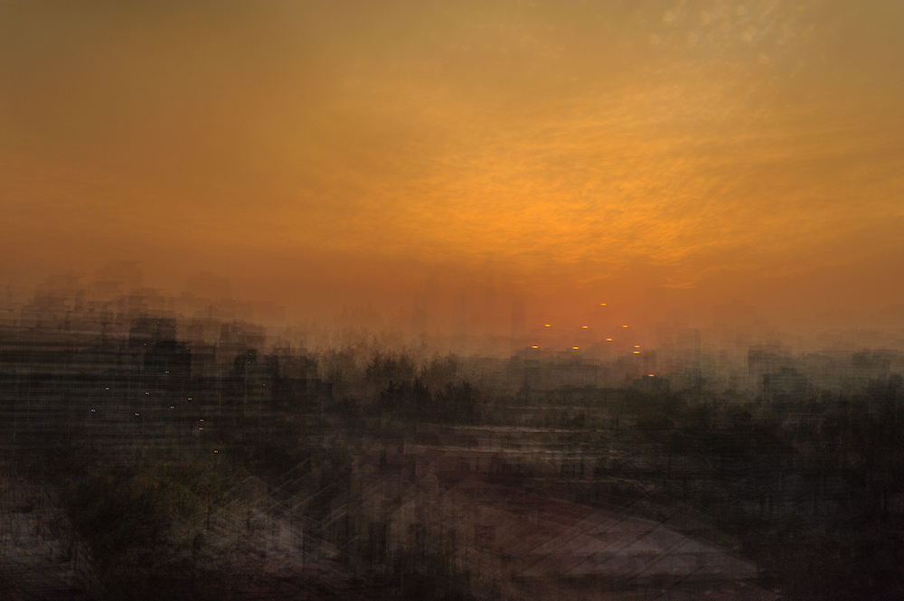

Interview with Sebastián Wilson: The Mystery of Color

Sebastián Wilson es un fotógrafo de Santiago, Chile. Estudió arquitectura, que tiene una clara influencia en su trabajo, tanto en lo gráfico, como en la forma que observa y retrata la luz. Su trabajo ha sido publicado en libros y revistas en muchos países, como Chile, Alemania, España y Estados Unidos.
Su trabajo en “Embodied Lightt”, el libro sobre el templo Baha’i en Chile, de los arquitectos Hariri + Pontarini, es una síntesis de su habilidad de capturar los detalles de la presencia efímera de la luz, y lo que ha sido físicamente construido. Sus imágenes fueron usadas en la charla TED sobre el templo, titulada, “How do you build a sacred place?”
Sebastián ha viajado a lo largo de Chile, capturando su gente, paisajes y luz en cada región. Ha vendido su trabajo en galerías y clientes buscando decorar sus hogares y espacios. Ha trabajado junto al fotógrafo Guy Wenborne donde ha procesado muchas de sus imágenes de Chile para ser publicadas, capturando el color de cada escena.
Su constante exploración en fotografía se enfoca en la luz y el color buscando diferentes técnicas tales como la exposición múltiple para llegar a una abstracción que no se puede lograr a través de la fotografía “directa”. Su trabajo comercial siempre busca resaltar a través del uso novedoso de la luz.
Sebastián también ha enseñado fotografía en institutos, colegios e individualmente enfocándose en las necesidades de cada persona y de sus requerimientos.
Para ver más del trabajo de Sebastián, por favor visiten: www.swl.cl
La galería online que Sebastián comenzó durante la pandemia, EJERCICIOS-LUMINICOS
En Instagram: @swl_foto
Sebastián Wilson is a photographer living in Santiago, Chile. He studied architecture which has a clear influence on his work both on the graphic sense, and on the way he observes and portrays light. His photographs have been published in books and magazines in many countries, including Chile, Germany, Spain, and the United States.
His work on Embodied Light, the book about the Bahà’í temple in Chile by Hariri + Pontarini Architects is a synthesis of his ability to capture the details of both the ephemeral presence of light, and what is fiscally built. His images where also used in the TED talk about the temple, titled, How do you build a sacred space?
Sebastián has traveled through Chile, capturing the people, landscapes and light of each region. He has sold his work to galleries and clients looking to decorate their homes and spaces. He has worked with the photographer Guy Wenborne where he has post processed many of his images for books about Chile, capturing the color of each scene.
His constant exploration on photography focuses on light and color, searching for different techniques such as multiple exposures to reach an abstraction that can’t be achieved through “straight” photography. His commercial work always tries to stand out through the novel use of light.
Sebastián has also taught photography in institutes, schools and individually focusing on the needs of each person and their needs.
To view more of Sebastian’s work, please visit: www.swl.cl
The online gallery Sebastián started during the pandemic, EJERCICIOS-LUMINICOS
On Instagram: @swl_foto



Links related to the conversation:
Steven Hall, architect; Chapel of St. Ignatius, Seattle, WA, United States, 1997
Steven Hall on Instagram speaking about his work and inspiration in short reel.
Jun’ichirō Tanizaki, In Praise of Shadows. Adaptation published in the Atlantic Magazine, January, 1955
Jun’ichirō Tanizaki, In Praise of Shadows. Audio book available on YouTube.
Gaston Bachelard, The Poetics of Space. Available as a PDF through Evergreen
How to Turn a Room into a Camera Obscura, YouTube
James Turrell on Charlie Rose, YouTube, June 28, 2013
Yves Klein at the Centre Pompidou; International Klein Blue
Bahà’í temple in Chile by Hariri + Pontarini Architects; book: Embodied Light
TED talk by Siamak Hariri on the Bahà’í temple, titled, How do you build a sacred space?
Sebastián’s online gallery, EJERCICIOS-LUMINICOS (Exercises with Light)
The Science of Rainbows, by Neil deGrasse Tyson
Lost in Translation, 2003, IMDb
Additional Inspirations:
Chromosaturation (from the exhibition “Acontecer Cromático“) de Carlos Cruz-Diez
N8zine (instagram profile)
The aerial photography of Bernhard Edmaier
Color light abstractions by Wynn Bullock
Jim Brandenburg (specially his book Chased by Light) YouTube